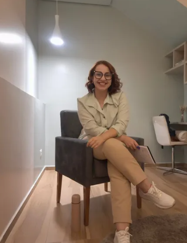
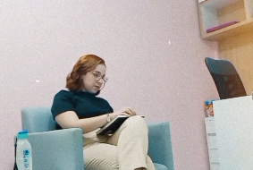

Um espaço de acolhimento
Um ambiente de respeito e escuta para falar do que importa para você.
Entre tantas demandas do dia a dia, você também merece um momento para olhar para si. Aqui, a escuta, o respeito e o cuidado caminham juntos.


Olá! Sou Bárbara Rodrigues, psicóloga, CRP 02/24493. Acredito na importância de oferecer um ambiente acolhedor, onde cada pessoa possa falar sobre suas vivências com respeito, cuidado e sem julgamentos.
A psicoterapia pode ser um espaço para refletir sobre sentimentos, relações, desafios e caminhos possíveis — sempre considerando sua história e seu ritmo.
Cada história é única. O atendimento psicológico oferece um espaço de escuta profissional para diferentes momentos da vida.
Um ambiente de respeito e escuta para falar do que importa para você.
Uma oportunidade de olhar para emoções, pensamentos e experiências.
Um processo construído com atenção à sua individualidade e às suas necessidades.
Para saber sobre público atendido, modalidade, horários e valores, entre em contato para confirmar a disponibilidade.
Um ambiente tranquilo para conversar, refletir e reservar um tempo para você.
Solicitar um horário
Antes de dar o primeiro passo, que tal conhecer um pouco mais de mim? Assista ao vídeo.
“Todo começo merece acolhimento.”Entre em contato para tirar dúvidas sobre o atendimento e consultar horários disponíveis.
Conversar pelo WhatsApp Atendimento mediante agendamento prévio.